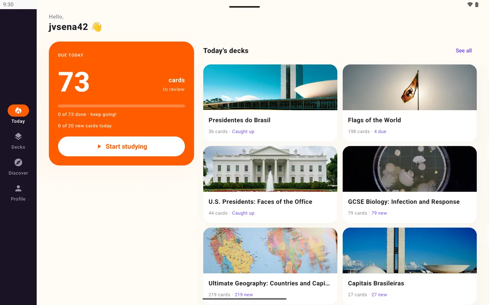
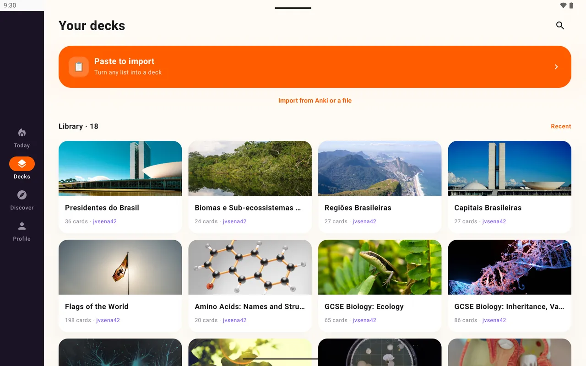

Loopky를 고르세요
무료에 광고 없음, 말하기 연습, 링크 공유, AI가 만드는 덱, 그리고 Anki 덱도 가져옵니다.
비교
각 앱이 가장 잘하는 것과, 당신이 배우는 방식에 맞는 앱.
무료. 광고 없음. 오픈소스.

무료에 광고 없음, 말하기 연습, 링크 공유, AI가 만드는 덱, 그리고 Anki 덱도 가져옵니다.
FSRS, 완전한 오프라인 공부, 오디오 파일, LaTeX, 사용자 템플릿이 꼭 필요하다면.
반에서 이미 쓰고 있고, 간격 반복보다 게임을 원한다면.
| Loopky | Anki | Quizlet | |
|---|---|---|---|
| 가격 | 무료, 광고 없음 | 무료, iPhone 앱은 유료 | 무료(광고 있음), 유료 요금제 |
| Anki 덱 열기 | 예 | 예 | 아니요 |
| 일정 관리 | 직접 정하는 고정 간격 | FSRS 또는 SM-2 | 학습 모드 |
| 카드 읽어 주기 | 예, 35개 언어 | 설정 필요 | 예 |
| 발음 확인 | 예 | 애드온 필요 | 핵심 기능 아님 |
| 링크로 공유 | 예 | AnkiWeb 공유 덱 | 예 |
| 완전한 오프라인 공부 | 아니요 | 예 | 제한적 |
| 오픈소스 | 예 | 예 | 아니요 |
다른 앱은 시간이 지나며 바뀝니다. 현재 가격은 각 앱의 사이트에서 확인하세요.
각 덱을 .apkg로 내보내고 Loopky에서 여세요. 텍스트, 이미지, 빈칸 카드가 옮겨지고, 큰 화면에서는 두 창 화면이 됩니다.

많은 학습자에게는 그렇습니다. 더 간단하고, 휴대폰에서도 무료이며, 말하기 연습과 공유가 기본으로 들어 있습니다. Anki에는 FSRS, 완전한 오프라인 공부, 오디오, LaTeX가 있습니다.
Loopky는 광고도 유료 요금제도 없는 무료 앱이고, 간격 반복을 씁니다.
Anki에서 각 덱을 미디어 포함 .apkg로 내보내고 Loopky에서 가져오세요. 복습 기록은 처음부터 시작합니다.